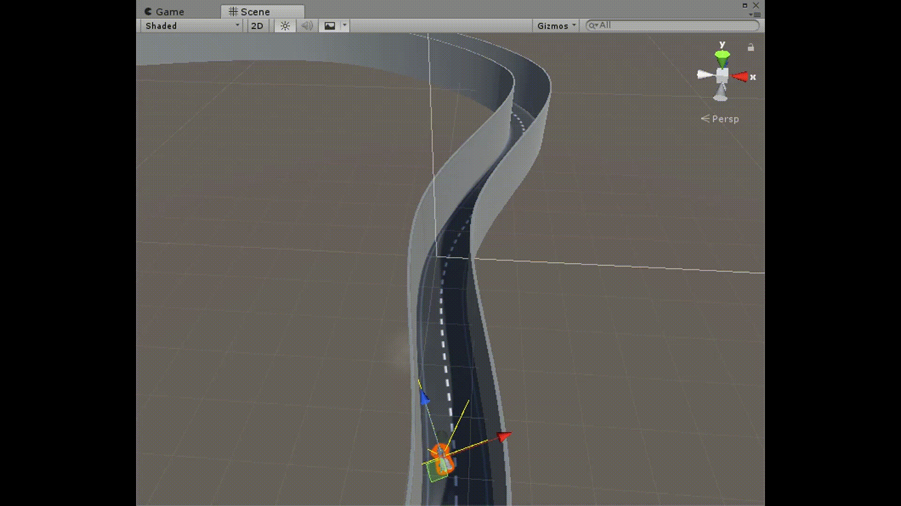
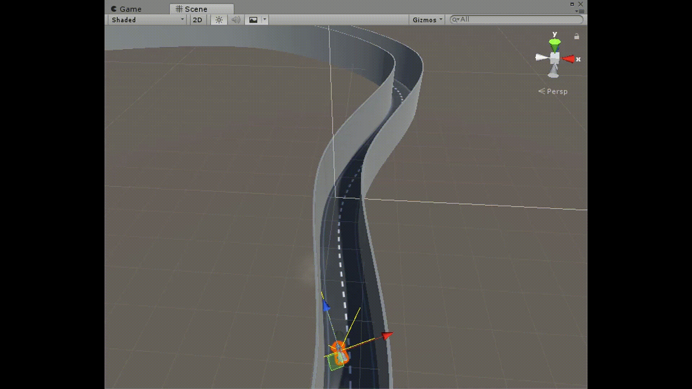
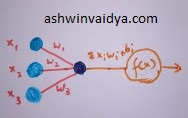
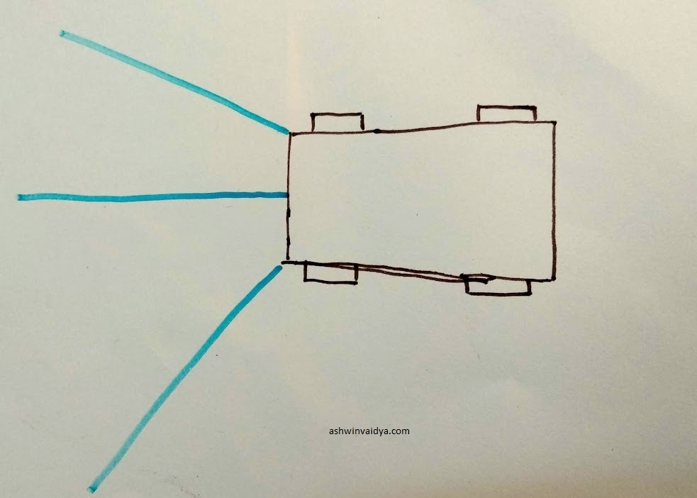

I created a self-driving car in Unity engine using genetic algorithm. You can see the results:
 

I took up this project after being inspired by these videos:


Making the Neural Network
To implement this the first step was to learn what a neural network is and how does it work.
After spending a lot of time on youtube and kaggle, I got a fair idea of what a neural network is. I think the best tutorial of a neural network similar to the one used in the project is here. Even if you are not familiar with neural networks, I’ll give you a quick intro needed for this project.
Basically, a neuron is modelled something like this:

Here, inputs to a neuron are multiplied by weights and added. This then is passed to an activation function. The aim of the activation function is to rescale the result from the previous step. The activation function used in the code is tanh function. It maps the input into the range of -1 to +1. But, before the sum of the weights multiplied by the inputs is passed through the activation function, a bias is added to it. For more on why bias is added, here is a good resource. I chose tanh function as the inputs to the move function of the car take value between -1 and 1 for both, the steering and the acceleration.
Now, I will explain the architecture of the neural network used in this project.
For the input layer, I decided to take the speed, distance in front, distance at 45 degrees to the left and the distance at 45 degrees to the right.

The took the speed as the car used in the project was provided with the standard assets of Unity. When the move function is called, it keeps increasing the speed till it reaches the max speed. This change is speed could affect the decision taken when approaching a turn.
For the hidden layer, I thought 5 neurons would do the job. This was more of an arbitrary choice. I didn’t tweak this layer to see whether it affects the performance.
The output layer was a pretty easy decision. I needed the network to predict the direction to turn and whether to accelerate. Since, the outputs were two, I chose two neurons for the output.
However, when I started training, I quickly realized two major issues. Since the distance to the immediate left and immediate right was not provided, the car tended to go very close to the wall during the turns. Further, since the network was not trained, the acceleration output tended to make the car oscillate at the place or it didn’t move at all.
To tackle the first issue, I modified the network to take the left and right distances also as the inputs. It now became something like this:

Even though the acceleration output could have been trained. I decided that for this version, I will not use the neural network to predict the acceleration.
The final network looked like this:

Training
The neural network described above was initialized with random weights and biases. At this current state, it was not enough to make the car drive itself. To make it drive, I needed to train the network. Training is basically changing the weights so that the predicted output conforms to the task required. There are various methods to train the network. Being inspired from the first two videos, I choose to use genetic algorithm.
In order to learn how a genetic algorithm works and how to implement it, I came across this video.

I adapted the code to python. You can see it here. This gave me some confidence to tackle the project.
Here is a quick recap of how a genetic algorithm works:
1. Initialize a population
2. Find the fittest children of the population.
3. Crossover the fittest children.
4. Mutate the new population
5. If the fitness criteria is not met, go to step 2
With this in mind, I started with the population size of 10 children, each with randomly initialized weights. I attached each network one by one to the car and stored the furthest distance and the second furthest distance travelled. These two networks were then selected as the parents of the next population. Each time the car collided with the wall, the child is killed.
I took the weights and biases of both the parents and alternately assigned to each child. While assigning, I mutated it with 5% mutation rate.
Finally, at ~60th generation that car learnt to drive itself.
Thanks for reading. If you like this post. Please leave a comment with feedback, suggestion and criticisms. They help me to improve.